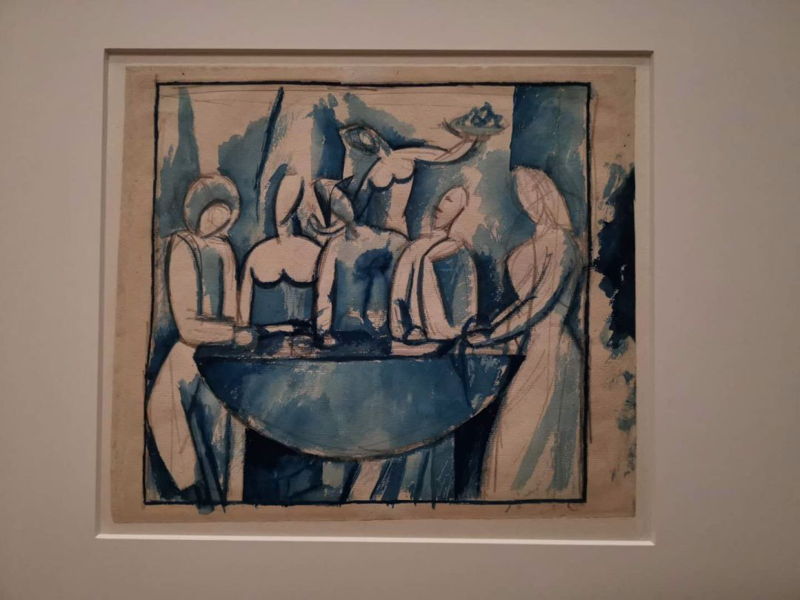
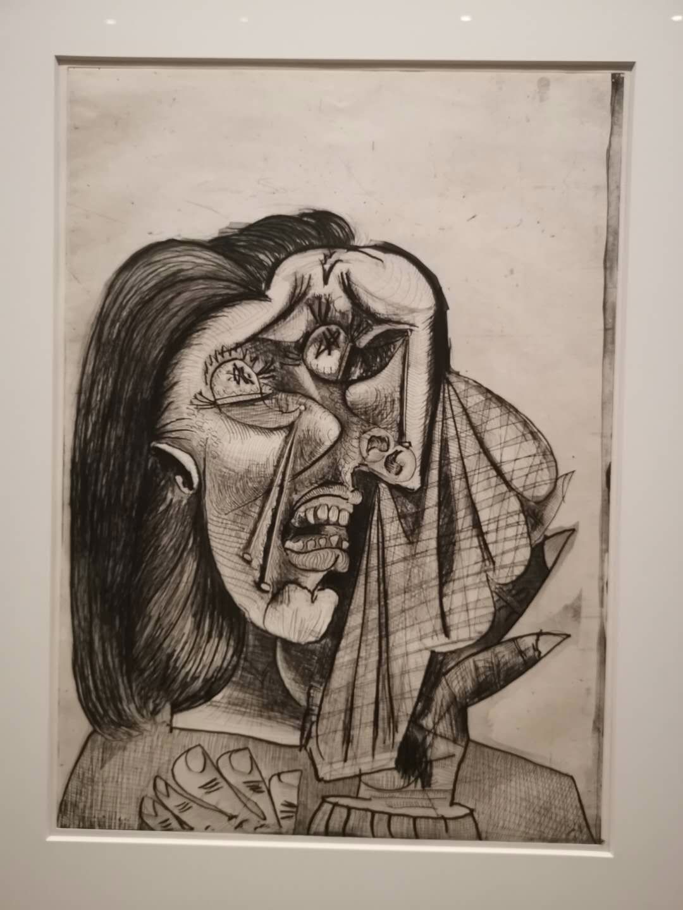
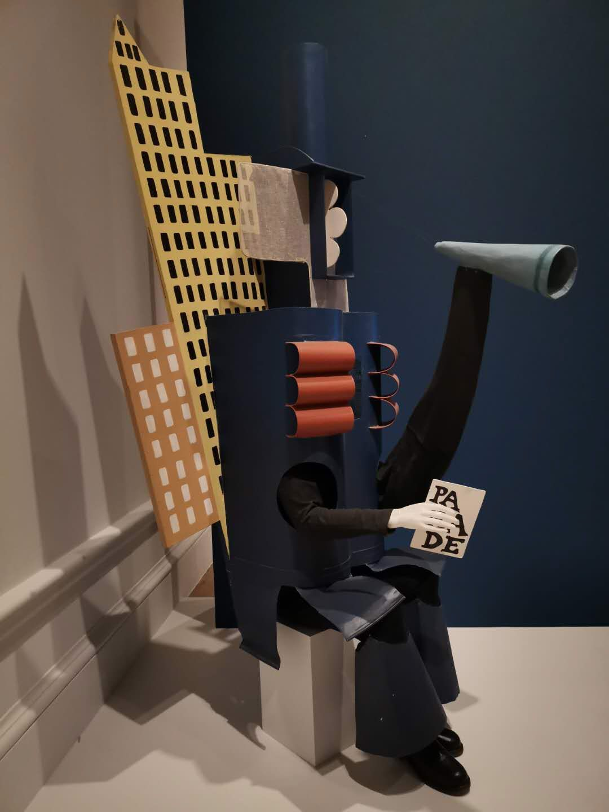
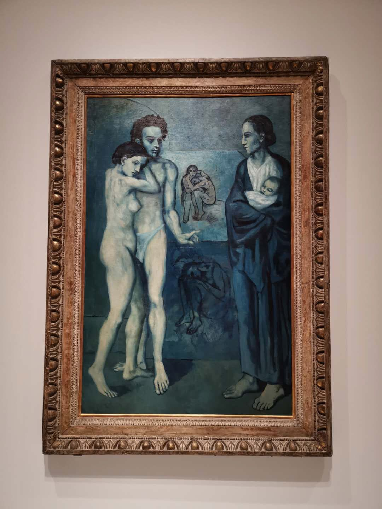
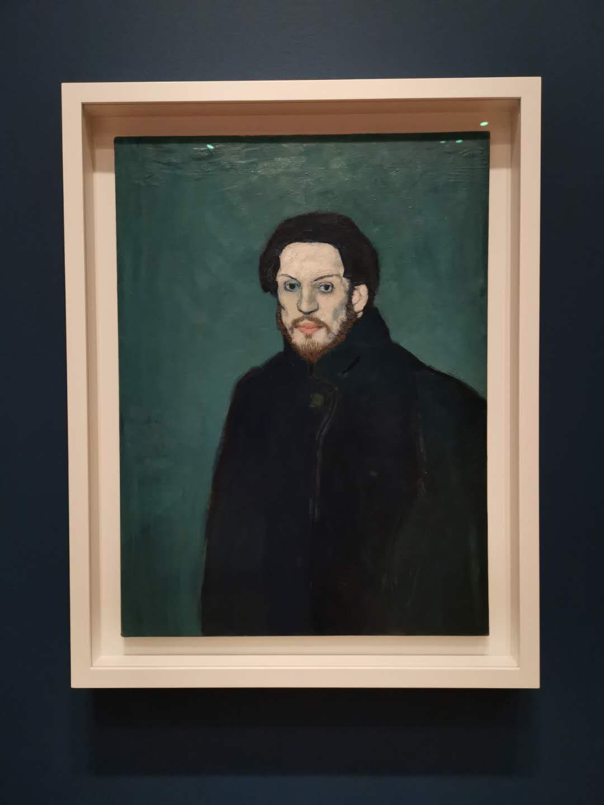

英国“隔离”日记 || 3月13日~17日：私人化的记录与感激
原文链接 备份链接 今天是3月18日，月相为29%的残月。 It is March 18 with a 29 percent of Waning Crescent. 距离新月还有 6 天。 There are 6 days until …
伦敦，3月14日。出门前和室友讨论在外面摘下口罩的时候把口罩放哪儿的问题，她说她的可以叠起来，而我的是只有钢丝的普通外科口罩，并不方便。于是室友大发慈悲，我用五个没气阀的Silverline换了她一个可折叠、可重复使用且带气阀的3M。路上我们在没人地方摘下口罩，人开始多起来时戴上，每次碰口罩要酒精洗手。有时候手会不自觉摸到脸颊，我们俩都神经兮兮地把消毒洗手液在脸上抹了抹。路上零星地有外国人戴口罩，或者把高领毛衣翻上去套住嘴巴和鼻子。
Battersea步行到维多利亚车站，路过周六才会出现的路边鲜花和蔬菜小摊。再经过白金汉宫的喷泉和绿园，游人少了很多，伦敦市中心的Mayfair画廊多半关了，门上贴了疫情的公告。行宫一样的Thaddaeus Ropac还开着，在里面看了把录像一个一个看过来，画廊里人很少。其实很珍惜这种一切如常的气氛，这和武汉不太一样，其实大多数人心里都崩着呢，但还是要先维持日常。我在猜Englishness里的镇定，类似在轰炸过后的废墟上喝一杯茶，其实好多时候是对正常公共秩序的确认，是给别人看的，也是给自己。这个岛屿太小了，秩序崩盘之后不知道什么更大的灾祸会落到头上。所以这种表面镇定可能也是求生的一种，其实暗地里都去买洗手液、意大利面和厕所卷纸了。
去Royal Academy的路上，突然一只爪子罩过来，作势要摘我的口罩，我反应过来时那只手已经晃过我的头，我转身看到胳膊还支楞在外面的男人和挎着他另一边胳膊的女伴往前走着，却也转身看着我。我喊了一句，”it’s not polite.”
在RA买票排队，身后那位站在我一米外的英国爷爷笑眯眯地看着我。我问他，“do you find it’s strange?” “it seems very professional.” 于是给他科普了气阀之于口罩的作用。在展厅里看毕加索蓝色时期的画，老爷爷突然又出现了，说“it’s a brilliant work!”
看了Picasso on Paper，人不少，认识了几种新的纸的种类。傍晚的时候去看来驻地的朋友，发现在这栋房子里驻地的六个国家的艺术家都在紧急联系旅游公司订票回加拿大、巴西、荷兰……朋友可能回不去了，因为机票太贵。
我一开始没考虑回国，觉得心情会太乱。今天下午挣扎了，想到要隔离半个月、花两三万机票以及不知道何时能回到英国，觉得还是在这里待着吧，好好读书写论文，顺便再体会一下特殊时期的伦敦人情世故。晚上回到家，和室友演练外套和鞋子应该放在哪儿，讨论羊毛外套不会在消毒时被酒精伤到，想象严重时出门要穿上雨衣、还要绑起头发、带上浴帽，一次性手套在路上了。想完这些就心安很多，想到我妈昨天的问题，英国的公园里长出苦菜了吗？她显然是想让我去挖野菜。





原文链接 备份链接 今天是3月18日，月相为29%的残月。 It is March 18 with a 29 percent of Waning Crescent. 距离新月还有 6 天。 There are 6 days until …
原文链接 备份链接 3月16日，伦敦。 十点钟，窗户外面传进来，幼儿园里孩子的哗啦哗啦的笑声。蓝天白云，阳光刺眼，“孩子们还没回家啊”……这是心里的反应。 Boris Johnson今天又开了记者会，“today we need to …
原文链接 备份链接 今天是3月15日，月相为60%的下弦月。 It is March 15 with a 60 percent of Last Quarter. 距离新月还有 9 天。 There are 9 days until New …
原文链接 备份链接 凤凰新闻客户端 凤凰网在人间工作室出品 我家在湖北襄阳，妈妈是襄阳中心医院的医生。疫情发生以来，截至2月17日，襄阳新冠肺炎确诊病例累计1155例，在湖北省排名第七位。 我住在美国华盛顿。 1月21号，我给妈妈打电 …
原文链接 备份链接 今天，火神山医院正式交付。9天时间，可容纳1000张床位的医院在武汉落成，参照非典期间北京小汤山医院模式，专门收治新型冠状病毒肺炎患者。在医院床位紧缺的情况之下，大家对火神山和雷神山给予了期望，而实际效果如何，能多大 …